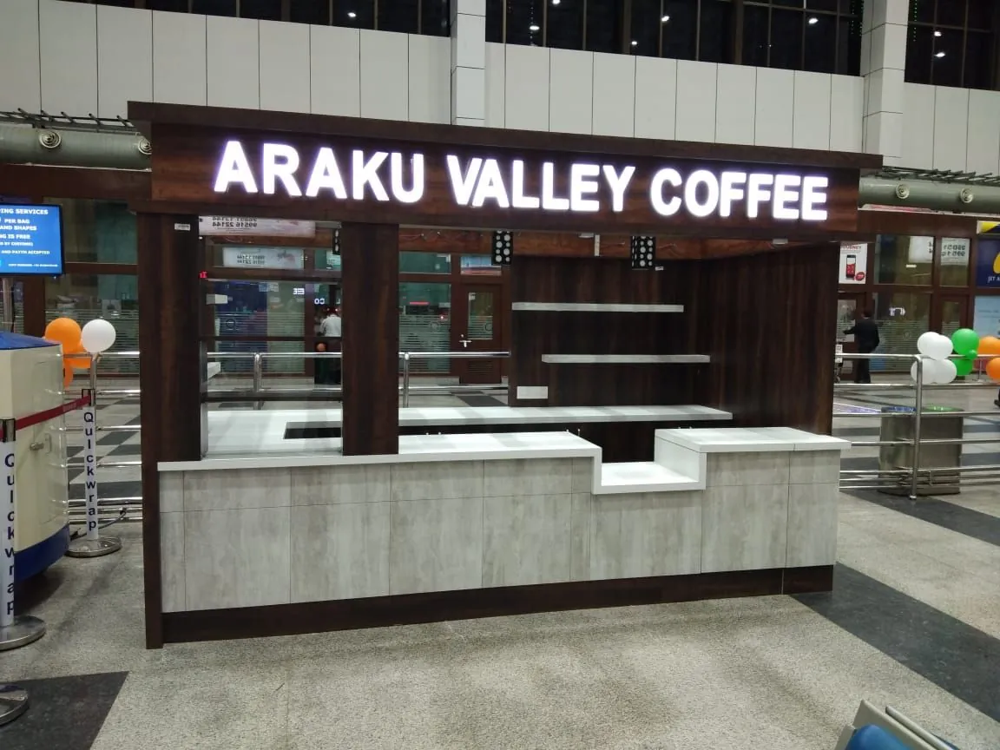
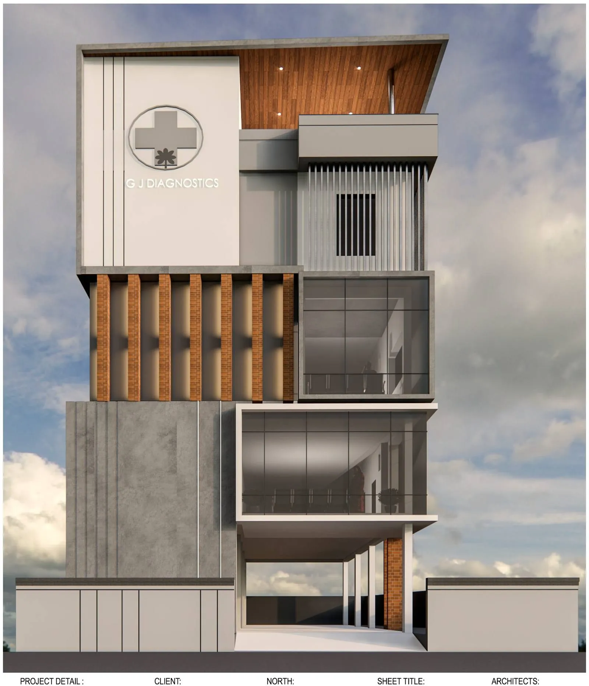
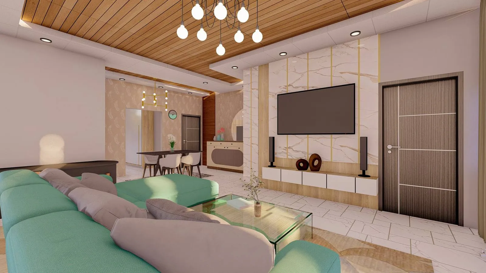
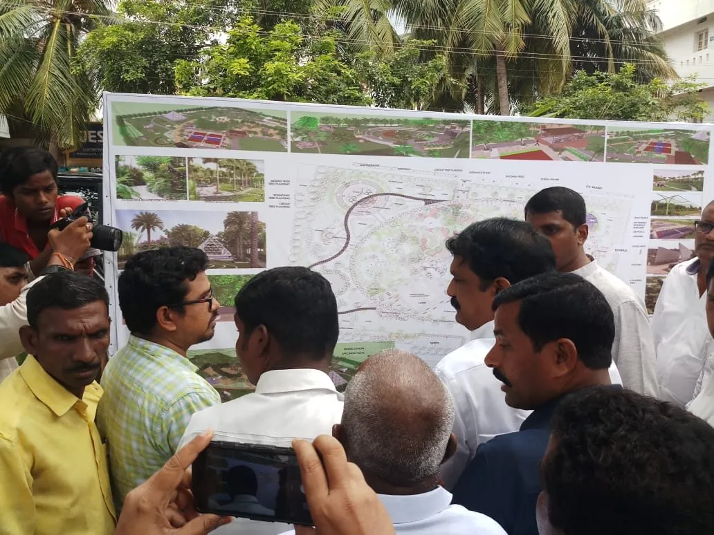
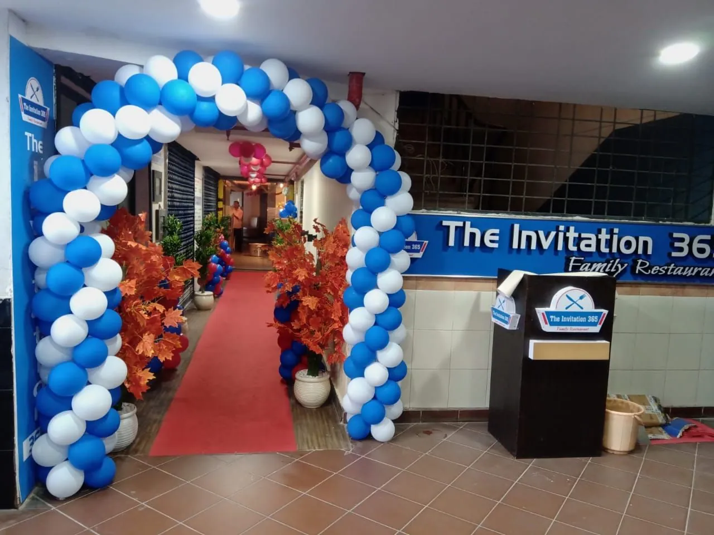
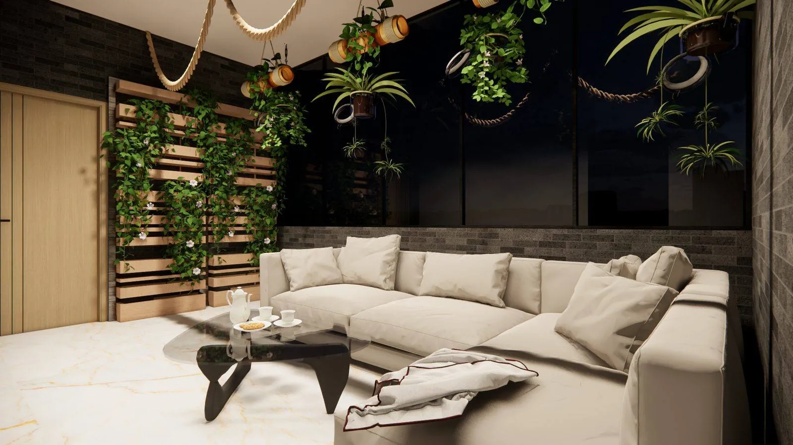

Visakhapatnam projects
12 projects in and around Visakhapatnam

Interior
ARAKU Coffee, GCC

Architectural
District Police Offices

Interior
GJ Medical Centre Interiors

Architectural
GJ Medical Centre

Interior
GOVIND LMN Residence

Landscape
GVMC City Parks

Institutional
Indoor Stadium, Atchutapuram

Interior
Invitation 365 Restaurant

Architectural
Mr. Rachit Villa, JSW Duvvada

Interior
Naval Interiors, Visakhapatnam

Landscape
Taj Villas Terrace

Landscape